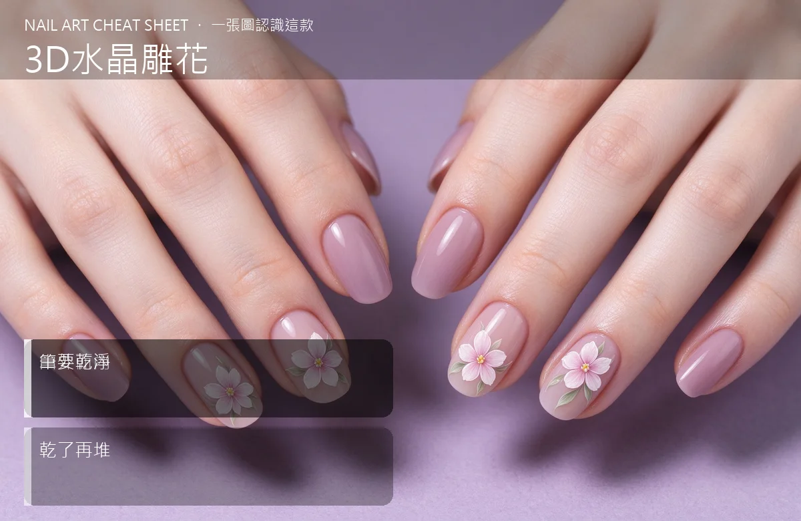

美甲3D水晶雕花是什麼？進階入門攻略
3D 雕花是把水晶粉液捏成一朵朵小花、蝴蝶，再黏到指甲上——美甲界的黏土手作。
3D水晶雕花原理與辨識重點：美甲師不說的由外而內
看過那種指甲上有一朵立體玫瑰的照片嗎？多半就是 3D 水晶雕花。它是先在『分離墊或鋁箔』上，用小顆水晶珠捏出花瓣、葉子、蝴蝶翅膀……一個零件一個零件做好，等完全固化後再用凝膠或水晶黏到指甲上。因為是獨立組件，不像雕塑那樣在甲面即興，失敗率相對低一點。
誰適合做3D水晶雕花？雕花專修對號入座
想做婚紗甲、派對甲、造型甲的客人；學習者要先有基礎水晶功。
3D水晶雕花美甲施作步驟：花瓣雕法
在隔離墊上取小珠 → 由外而內壓出花瓣形（先外圈、再內瓣）→ 完全固化再取下 → 用凝膠黏到甲面定位 → 封層固定。
3D水晶雕花優缺點分析：美甲持久度與傷甲評估
| 優點 | 說明 |
|---|---|
| 造型精緻、可預先做好備用、也能換到不同指甲上。 | 是歐美流派的招牌，進階就能上手 |
| 缺點 | 說明 |
| 零件小、筆要非常乾淨，一個不小心就裂或碎。 | 前置與最忌『花瓣還沒全乾就急著堆下一片』——底下沒硬就壓上去，兩片會粘死變一坨。一定『等乾了再堆』。沒顧好會打折 |

3D水晶雕花新手雷區：筆要乾淨與常見錯誤
注意：最忌『花瓣還沒全乾就急著堆下一片』——底下沒硬就壓上去，兩片會粘死變一坨。一定『等乾了再堆』。
3D水晶雕花和其他美甲做法的差別比較
跟水晶雕塑（sculpting）比，雕塑是在甲面直接堆起伏；3D 雕花是另外做好再貼，像做甜點擠花。兩者工具相同、工法不同。
3D水晶雕花美甲常見問題 FAQ
Q：雕花可以撐多久？ A：正常保養 2 週左右，但凸出的花瓣容易撞到，建議戴做家事手套。
Q：自己在家做難嗎？ A：比想像中需要練，光壓出一片勻稱花瓣就要幾十次練習。建議先在練習板上雕幾十朵再上甲。